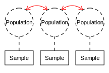

| 🍌 Banana |
🍬 Candy |
😐 Control |
|---|---|---|
| 9 | 3 | 5 |
| 11 | 5 | 6 |
| 13 | 4 | 7 |
| \(M = 11\) | \(M = 4\) | \(M = 6\) |
Manipulation
|
||
|---|---|---|
| 🍌 Banana |
🍬 Candy |
😐 Control |
| 9 | 3 | 5 |
| 11 | 5 | 6 |
| 13 | 4 | 7 |
| \(M = 11\) | \(M = 4\) | \(M = 6\) |

\(SS_{total}\)
\(SS_{within}\) \(SS_{between}\)
\(df_{total}\)
\(df_{within}\) \(df_{between}\)
\(MS_{between} = \dfrac{SS_{between}}{df_{between}}\)
\(MS_{within} = \dfrac{SS_{within}}{df_{within}}\)
\(F = \dfrac{MS_{between}}{MS_{within}}\)
\(SS_{total} = \Sigma X^2 - \dfrac{G^2}{N}\) \(df_{total} = N-1\)
\(SS_{within} = \Sigma SS_{each \ treamtent}\) \(df_{within} = N-k\)
\(SS_{between} = \Sigma \dfrac{T^2}{n} - \dfrac{G^2}{N}\) \(df_{between} = k-1\)
| Symbol | Meaning |
|---|---|
| \(k\) | Number of treatment conditions |
| \(n_1, n_2...\) | Number of scores in each treatment |
| \(N\) | Total number of scores |
| \(T_1, T_2...\) | Sum of scores \((\Sigma X)\) for each treatment |
| \(G\) | Grand total of all scores in the study |
| Source | \(SS\) | \(df\) | \(MS\) | \(F\) |
|---|---|---|---|---|
| Between treatments | ||||
| Within treatments | ||||
| Total |
\(\alpha = .05\)
|
\(df_{numerator}\)
|
|||||||||
|---|---|---|---|---|---|---|---|---|---|---|
| \(df_{denominator}\) | 1 | 2 | 3 | 4 | 5 | 6 | 7 | 8 | 9 | 10 |
| 1 | 161.45 | 199.50 | 215.71 | 224.58 | 230.16 | 233.99 | 236.77 | 238.88 | 240.54 | 241.88 |
| 2 | 18.51 | 19.00 | 19.16 | 19.25 | 19.30 | 19.33 | 19.35 | 19.37 | 19.39 | 19.40 |
| 3 | 10.13 | 9.55 | 9.28 | 9.12 | 9.01 | 8.94 | 8.89 | 8.85 | 8.81 | 8.79 |
| 4 | 7.71 | 6.94 | 6.59 | 6.39 | 6.26 | 6.16 | 6.09 | 6.04 | 6.00 | 5.96 |
| 5 | 6.61 | 5.79 | 5.41 | 5.19 | 5.05 | 4.95 | 4.88 | 4.82 | 4.77 | 4.74 |
| 6 | 5.99 | 5.14 | 4.76 | 4.53 | 4.39 | 4.28 | 4.21 | 4.15 | 4.10 | 4.06 |
| 7 | 5.59 | 4.74 | 4.35 | 4.12 | 3.97 | 3.87 | 3.79 | 3.73 | 3.68 | 3.64 |
| 8 | 5.32 | 4.46 | 4.07 | 3.84 | 3.69 | 3.58 | 3.50 | 3.44 | 3.39 | 3.35 |
| 9 | 5.12 | 4.26 | 3.86 | 3.63 | 3.48 | 3.37 | 3.29 | 3.23 | 3.18 | 3.14 |
| 10 | 4.96 | 4.10 | 3.71 | 3.48 | 3.33 | 3.22 | 3.13 | 3.07 | 3.02 | 2.98 |
jStat = require("../js/jstat.js")
aov_table = {
var df1, df2, critical
function getDf2() {
try {
df2 = d3.select(this).select("td")._groups[0][0].innerHTML;
} catch {} finally {update();}
}
function getDf1() {
try {
df1 = d3.select(this)._groups[0][0].cellIndex
if (df1 < 1) {df1 = 1}
} catch {} finally {update();}
}
d3.select("#tbl").selectAll("tr").on("click", getDf2)
d3.select("#tbl").selectAll("td").on("click", getDf1)
const w = 1050
const h = 200
const margin = {right: 100, left: 100, bottom: 20}
const svg = d3.select("#tbl").append("svg")
.attr("width", w).attr("height", h)
const x = d3.scaleLinear()
.domain([0,4])
.range([margin.left, w - margin.right])
const y = d3.scaleLinear()
.domain([0,1])
.range([h - margin.bottom, 0])
const xAxis = d3.axisBottom(x)
const line = d3.line()
.x(d => x(d.value))
.y(d => y(d.density))
function makeCurve(df1, df2) {
var arr = []
var values = jStat(0.01, 4, 210)[0]
for (var i = 0; i < values.length; i++) {
arr.push({value: values[i],
density: jStat.centralF.pdf(values[i], Number(df1), Number(df2))})
}
return arr
}
svg.append("g").attr("transform", `translate(0, ${h - margin.bottom})`)
.call(xAxis)
const curve = svg.append("path")
.attr("d", line(makeCurve(10, 10)))
.style("fill", "none")
.style("stroke", "black")
const df1Input = document.getElementById('df1-input')
df1Input.oninput = function() {
df1 = df1Input.value
update();
}
const df2Input = document.getElementById('df2-input')
df2Input.oninput = function() {
df2 = df2Input.value
update();
}
function update() {
d3.select("#df1-value").text(df1)
d3.select("#df2-value").text(df2)
critical = jStat.centralF.inv(0.95, Number(df1), Number(df2))
curve.attr("d", line(makeCurve(Number(df1), Number(df2))))
}
}1
1
Manipulation
|
||
|---|---|---|
| 🍌 Banana |
🍬 Candy |
😐 Control |
| 9 | 3 | 5 |
| 11 | 5 | 6 |
| 13 | 4 | 7 |
| \(M = 11\) | \(M = 4\) | \(M = 6\) |
\(N = 9\)
\(n = 3\)
\(k = 3\)
\(G = 63\)
\(\Sigma X^2 = 531\)
\(SS_{total} = \Sigma X^2 - \dfrac{G^2}{N} = 531 - \dfrac{63^2}{9} = 90\)
\(SS_{within} = \Sigma SS_{each \ treamtent} = 8+2+2 = 12\)
\(SS_{between} = \Sigma \dfrac{T^2}{n} - \dfrac{G^2}{N} = \dfrac{33^2}{3}+\dfrac{12^2}{3}+\dfrac{18^2}{3} - \dfrac{63^2}{9} = 78\)
\(df_{total} = N-1 = 8\)
\(df_{within} = N-k = 6\)
\(df_{between} = k-1 = 2\)
\(MS_{between} = \dfrac{SS_{between}}{df_{between}} = 39\)
\(MS_{within} = \dfrac{SS_{within}}{df_{within}} = 2\)
\(F = \dfrac{MS_{between}}{MS_{within}} = \dfrac{39}{2} = 19.5\)
\(\eta^2 = \dfrac{SS_{between}}{SS_{total}} = 0.87\)
A single-factor, independent-samples ANOVA revealed a significant difference between people who consumed a banana (\(M = 11\); \(SD = 2\)), a candy bar (\(M = 4\); \(SD = 1\)), and the control condition \((M = 6\); \(SD = 1)\); \(F(2,6) = 19.5\), \(p < .05\), \(\eta^2 = 0.87\).
\[\begin{align} HSD &= q \sqrt{\dfrac{MS_{within}}{n}} \\ &= 4.34 \sqrt{\dfrac{2}{3}} \\ &= 3.54 \end{align}\]
\(df\)
|
Number of Conditions
|
||||
|---|---|---|---|---|---|
| 2 | 3 | 4 | 5 | 6 | |
| 5 | 3.64 | 4.60 | 5.22 | 5.67 | 6.03 |
| 6 | 3.46 | 4.34 | 4.90 | 5.30 | 5.63 |
| 7 | 3.34 | 4.16 | 4.68 | 5.06 | 5.36 |
| 8 | 3.26 | 4.04 | 4.53 | 4.89 | 5.17 |
| 9 | 3.20 | 3.95 | 4.41 | 4.76 | 5.02 |
| 10 | 3.15 | 3.88 | 4.33 | 4.65 | 4.91 |
\[\begin{align} HSD &= q \sqrt{\dfrac{MS_{within}}{n}} \\ &= 4.34 \sqrt{\dfrac{2}{3}} \\ &= 3.54 \end{align}\]
Manipulation
|
||
|---|---|---|
| 🍌 Banana |
🍬 Candy |
😐 Control |
| 9 | 3 | 5 |
| 11 | 5 | 6 |
| 13 | 4 | 7 |
| \(M = 11\) | \(M = 4\) | \(M = 6\) |